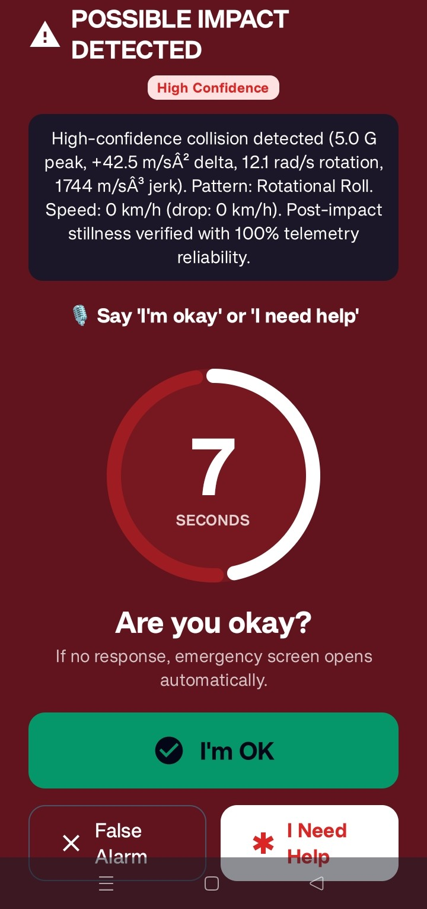

Verified Interface
 Home Dashboard
Home Dashboard
 Drive Mode Cockpit
Impact Alert Screen
Drive Mode Cockpit
Impact Alert Screen
 Incident Details & Vault
Incident Details & Vault
Mobile Application Interface
Actual application runtime screenshots captured from a physical Android device running the Vigilo prototype.
